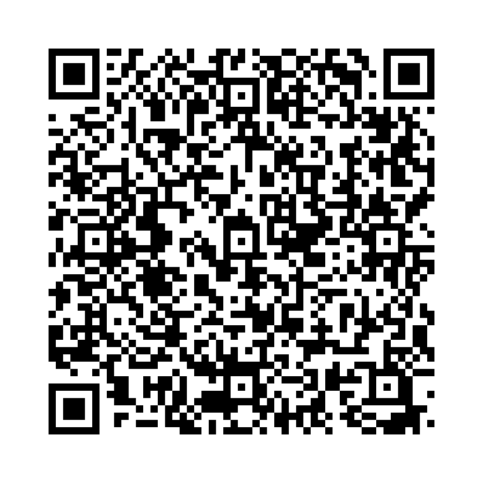

「leave」は「去る」「残す」「置いていく」などの意味を持ちます。目的語や前置詞を伴って、出発や物の配置などを表すことができます。
以下の単語を正しい語順に並べ替えて、正しい英文を作りましょう。

問題 1: (o'clock / leave / will / the / house / at / I / 8) - 私は8時に家を出ます。
解答: I will leave the house at 8 o’clock.
解説: 「I will leave the house at 8 o’clock.」は「私は8時に家を出ます。」という意味です。
問題 2: (on / left / her / she / bag / the / table) - 彼女はかばんをテーブルの上に置いていきました。
解答: She left her bag on the table.
解説: 「She left her bag on the table.」は「彼女はかばんをテーブルの上に置いていきました。」という意味です。
問題 3: ( leave / on / your / don't / toys / the / floor) - おもちゃを床に置きっぱなしにしないでください。
解答: Don’t leave your toys on the floor.
解説: 「Don’t leave your toys on the floor.」は「おもちゃを床に置きっぱなしにしないでください。」という意味です。
問題 4: (leave / will / we / for / school / soon) - 私たちはすぐに学校へ出発します。
解答: We will leave for school soon.
解説: 「We will leave for school soon.」は「私たちはすぐに学校へ出発します。」という意味です。
問題 5: ( his / he / homework / at / left / home) - 彼は宿題を家に忘れました。
解答: He left his homework at home.
解説: 「He left his homework at home.」は「彼は宿題を家に忘れました。」という意味です。
問題 6: ( the / please / door / open / leave) - ドアを開けたままにしてください。
解答: Please leave the door open.
解説: 「Please leave the door open.」は「ドアを開けたままにしてください。」という意味です。
問題 7: (will / leave / they / the / / o'clock / park / at / 5) - 彼らは5時に公園を出ます。
解答: They will leave the park at 5 o’clock.
解説: 「They will leave the park at 5 o’clock.」は「彼らは5時に公園を出ます。」という意味です。
問題 8: (will / leave / I / this / your / note / on / desk) - このメモをあなたの机に置いておきます。
解答: I will leave this note on your desk.
解説: 「I will leave this note on your desk.」は「このメモをあなたの机に置いておきます。」という意味です。
問題 9: (space / leave / some / for / others) - 他の人のためにスペースを空けておいてください。
解答: Leave some space for others.
解説: 「Leave some space for others.」は「他の人のためにスペースを空けておいてください。」という意味です。
問題 10: (her / she / shoes / at / leaves / the / door) - 彼女は靴をドアのところに置きます。
解答: She leaves her shoes at the door.
解説: 「She leaves her shoes at the door.」は「彼女は靴をドアのところに置きます。」という意味です。